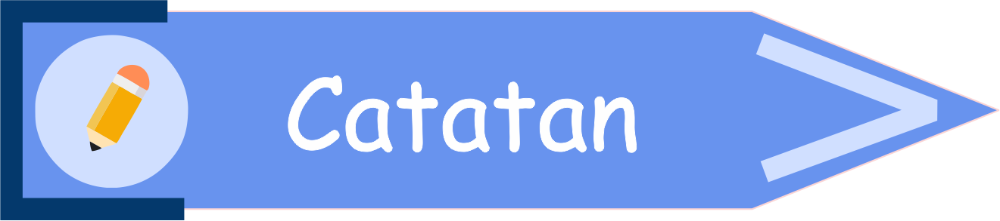

1.4 HIMPUNAN BERHINGGA DAN HIMPUNAN TAK BERHINGGA
 Prasyarat (klik saya)
Prasyarat (klik saya)- Siswa sudah mampu menyatakan notasi dari suatu himpunan.
- Siswa sudah mampu menyebutkan anggota dari suatu himpunan.
- Siswa sudah mampu menyatakan himpunan.
 Tujuan Pembelajaran (klik saya)
Tujuan Pembelajaran (klik saya)
Setelah mempelajari topik ini, diharapkan :
- Siswa mampu membedakan himpunan mana yang merupakan himpunan berhingga dan himpunan mana yang merupakan himpunan tak berhingga.
- Siswa mampu menyatakan banyak anggota dari suatu himpunan.

Perhatikanlah himpunan di bawah ini!
| A = {a, i, u, e, o} |
|---|
| Apakah himpunan A dapat dinyatakan banyak anggotanya? |
|
Yup! Himpunan A dapat dinyatakan banyak anggotanya. Berapa banyak anggota dari himpunan A? Jawablah dengan mengisi kotak kosong di bawah ini 😄 |
| Jawaban kamu tepat sekali! Banyak anggota dari himpunan A adalah 5. Dengan demikian dapat dikatakan bahwa himpunan A merupakan himpunan herhingga karena anggota himpunannya dapat dinyatakan banyaknya. Sehingga dapat dinotasikan : n(A) = 5 |
| C = {1, 2, 3, ..., 15} |
|---|
| Apakah himpunan C dapat dinyatakan banyak anggotanya? |
|
Yup! Himpunan C dapat dinyatakan banyak anggotanya. Berapa banyak anggota dari himpunan C? Jawablah dengan mengisi kotak kosong di bawah ini 😄 |
| Jawaban kamu tepat sekali! Banyak anggota dari himpunan C adalah 15. Dengan demikian dapat dikatakan bahwa himpunan C merupakan himpunan berhingga karena anggota himpunannya dapat dinyatakan banyaknya. Sehingga dapat dinotasikan : n(C) = 15 |
| D = {1, 3, 5, 7, ...} |
|---|
| Apakah himpunan D dapat dinyatakan banyak anggotanya? |
|
Yup! Jawaban kamu tepat 😄 Berbeda dengan himpunan sebelumnya, yaitu himpunan A dan himpunan C, himpunan D tidak dapat dinyatakan banyak anggotanya dengan bilangan karena himpunan tersebut tidak memiliki batas. Coba perhatikan kembali himpunan D, kita tidak tahu setelah angka 7 akan berhenti di angka berapa, maka dari itu dituliskan dengan titik-titik. Dengan demikian dapat dikatakan bahwa himpunan D merupakan himpunan tak berhingga karena memiliki anggota tak hingga (tidak memiliki batas). Sehingga dapat dinotasikan : n(D) = ∞ |
Dari kegiatan di atas, maka didapatkan pengertian dari Himpunan Berhingga dan Himpunan tak Berhingga yang dapat dilihat pada Tabel 1.4.1 di bawah ini.
| Pengertian | |
|---|---|
| Himpunan berhingga adalah himpunan yang memiliki banyak anggota berhingga (dapat dinyatakan banyaknya). | |
| Himpunan tak berhingga adalah himpunan yang memiliki banyak anggota tak hingga (tidak memiliki batas). |

*catatlah ke dalam buku catatanmu 😄
- Banyak anggota pada suatu himpunan, misal pada himpunan A, dapat dinotasikan dengan n(A).
- Jika himpunan A merupakan himpunan berhingga, maka banyak anggotanya dapat dinyatakan dengan bilangan.
- Namun, jika himpunan A merupakan himpunan tak berhingga, maka banyak anggotanya tidak dapat dinyatakan dengan suatu bilangan, tetapi dinyatakan dengan simbol ∞ (infinity), sehingga menjadi n(A) = ∞.